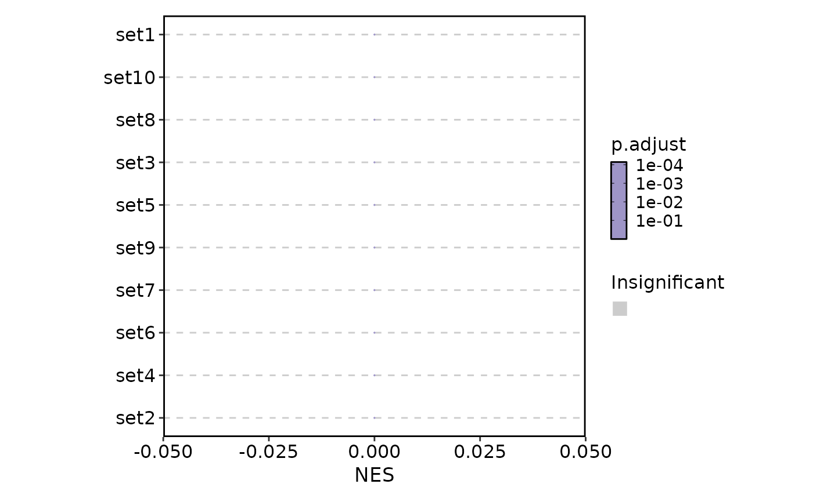
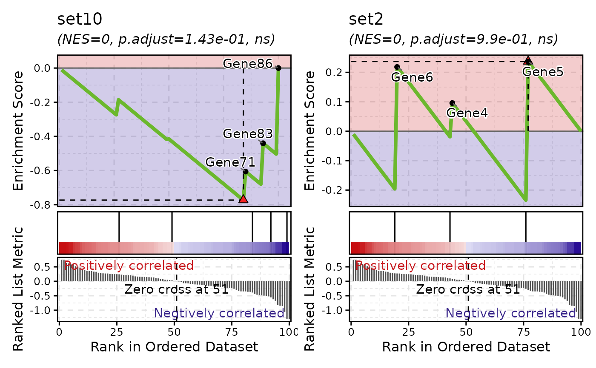
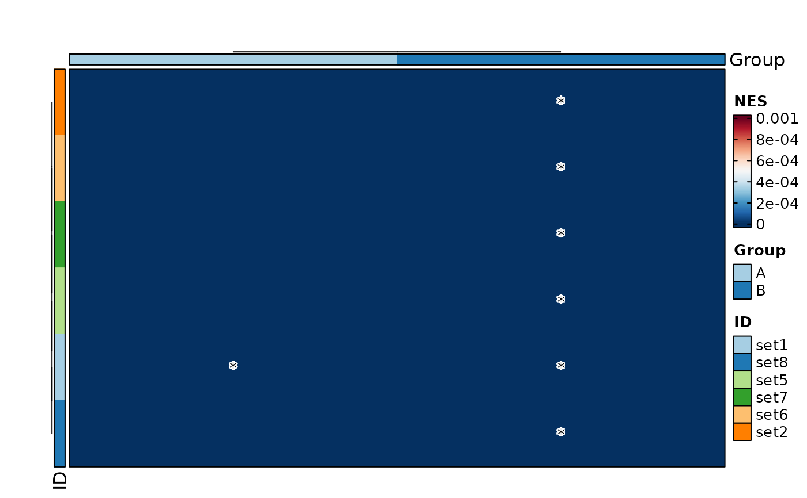
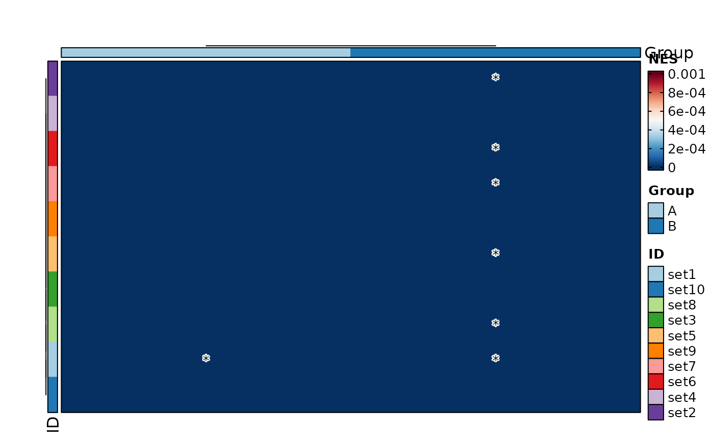
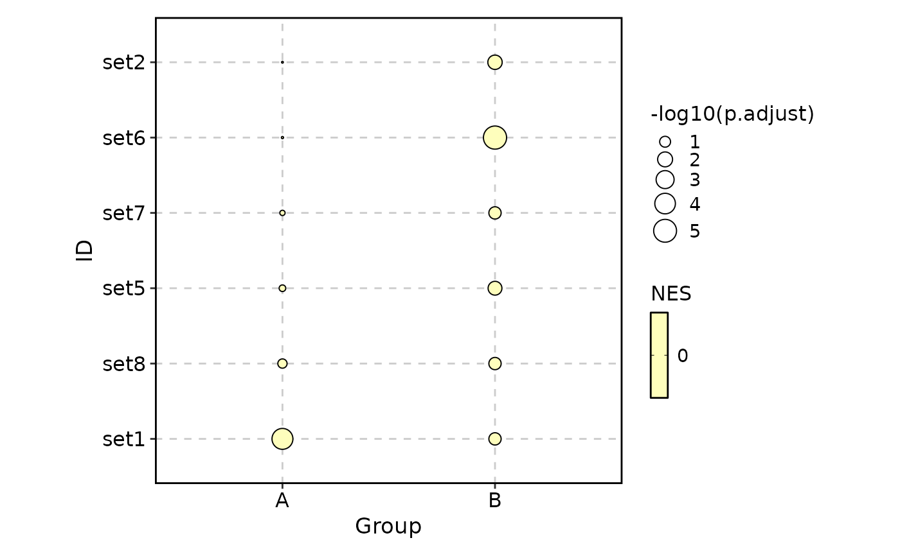

Visualize GSEA results
Usage
VizGSEA(
gsea_results,
plot_type = c("summary", "gsea", "heatmap", "dot"),
gene_ranks = "@gene_ranks",
gene_sets = "@gene_sets",
gs = NULL,
group_by = NULL,
values_by = "NES",
signif_by = "p.adjust",
signif_cutoff = 0.05,
signif_only = TRUE,
...
)Arguments
- gsea_results
A data frame with the results of the fgsea analysis
- plot_type
The type of plot to create One of "summary", "gsea"
- gene_ranks
A numeric vector of gene ranks with genes as names The gene ranks are used to plot the gene sets. If
gene_ranksis a character vector starting with@, the gene ranks will be taken from the attribute ofdata.- gene_sets
A list of gene sets, typically from a record of a GMT file The names of the list should match the
IDcolumn ofdata. Ifgene_setsis a character vector starting with@, the gene sets will be taken from the attribute ofdata. The GSEA plots will be plotted for each gene set. So, the number of plots will be the number of gene sets. If you only want to plot a subset of gene sets, you can subset thegene_setsbefore passing it to this function.- gs
The names of the gene sets to plot If
NULL, all gene sets ingene_setswill be plotted.- group_by
The column name to group by for heatmap and dot plot. They will be used as the columns in the heatmap or dot plot.
- values_by
The column name to use for the values in the heatmap or dot plot. Default is "NES" (normalized enrichment score).
- signif_by
The column name to use for significance in the heatmap or dot plot. Default is "p.adjust" (adjusted p-value). It can also be "pvalue". If NULL, no significance labels will be added to the heatmap.
- signif_cutoff
A numeric vector of significance cutoffs for the heatmap labels. Multiple values can be provided to indicate different levels (at most 3) of significance. For example,
c(0.05, 0.01, 0.001)will label pathways with p-values less than 0.05 with "", less than 0.01 with "", and less than 0.001 with "".- signif_only
If
TRUE, only pathways that are significant in any group will be kept. The significance is determined by thesignif_bycolumn andmax(signif_cutoff). IfFALSE, all pathways will be kept, but the significance labels will still be added to the heatmap.- ...
Additional arguments passed to the plotting function
When
plot_typeis "summary", they are passed toplotthis::GSEASummaryPlot()When
plot_typeis "gsea", they are passed toplotthis::GSEAPlot()
Examples
# \donttest{
set.seed(123)
exprs <- matrix(rnorm(1000, 0, 1), nrow = 100, ncol = 10)
colnames(exprs) <- paste0("Sample", 1:10)
rownames(exprs) <- paste0("Gene", 1:100)
classes <- sample(c("A", "B"), 10, replace = TRUE)
ranks <- RunGSEAPreRank(exprs, case = "A", control = "B", classes = classes)
genesets <- list(
set1 = c("Gene73", "Gene30", "Gene97"),
set2 = c("Gene4", "Gene5", "Gene6"),
set3 = c("Gene7", "Gene8", "Gene9"),
set4 = c("Gene10", "Gene11", "Gene12"),
set5 = c("Gene13", "Gene14", "Gene15"),
set6 = c("Gene16", "Gene17", "Gene18"),
set7 = c("Gene19", "Gene20", "Gene21"),
set8 = c("Gene22", "Gene23", "Gene24"),
set9 = c("Gene25", "Gene26", "Gene27"),
set10 = c("Gene12", "Gene86", "Gene87", "Gene83", "Gene71")
)
r <- RunGSEA(ranks, genesets)
# Visualize the GSEA results
VizGSEA(r, plot_type = "summary")

VizGSEA(r, plot_type = "gsea", gs = c("set10", "set2"))

r$Group <- "A"
r2 <- r
r2$Group <- "B"
r2$NES <- sample(r2$NES)
r2$padj <- sample(r2$padj * .1)
VizGSEA(rbind(r, r2), group_by = "Group", plot_type = "heatmap")

VizGSEA(rbind(r, r2), group_by = "Group", plot_type = "heatmap", signif_only = FALSE)

VizGSEA(rbind(r, r2), group_by = "Group", plot_type = "dot")

VizGSEA(rbind(r, r2), group_by = "Group", plot_type = "dot", signif_only = FALSE)
# }